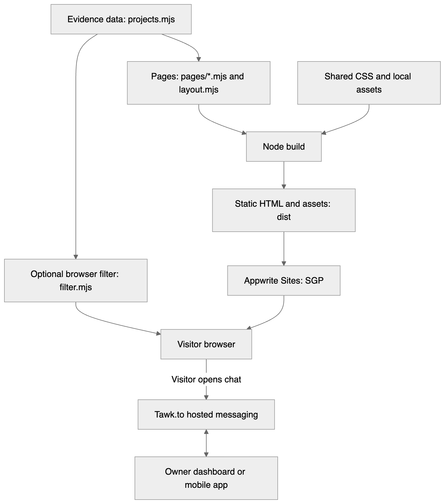
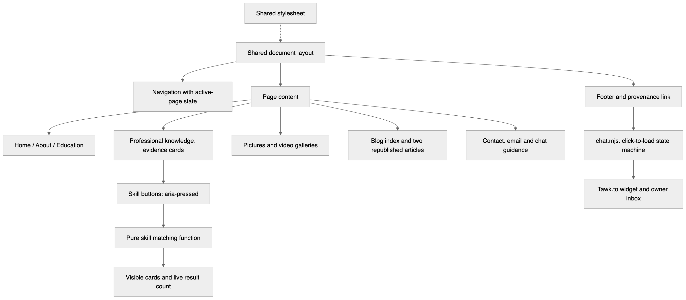
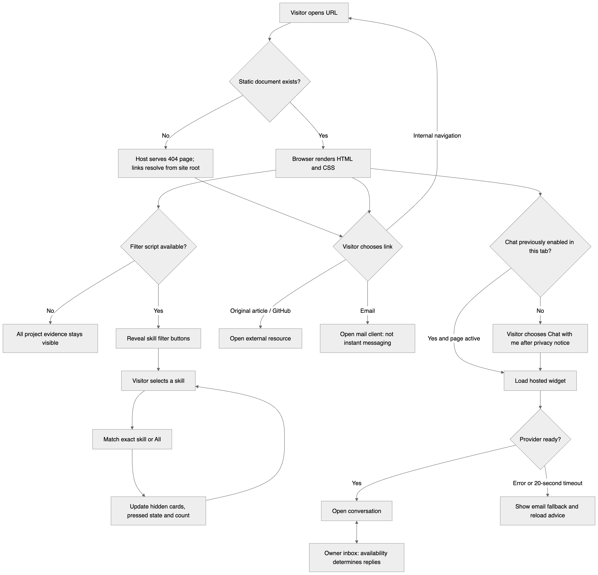
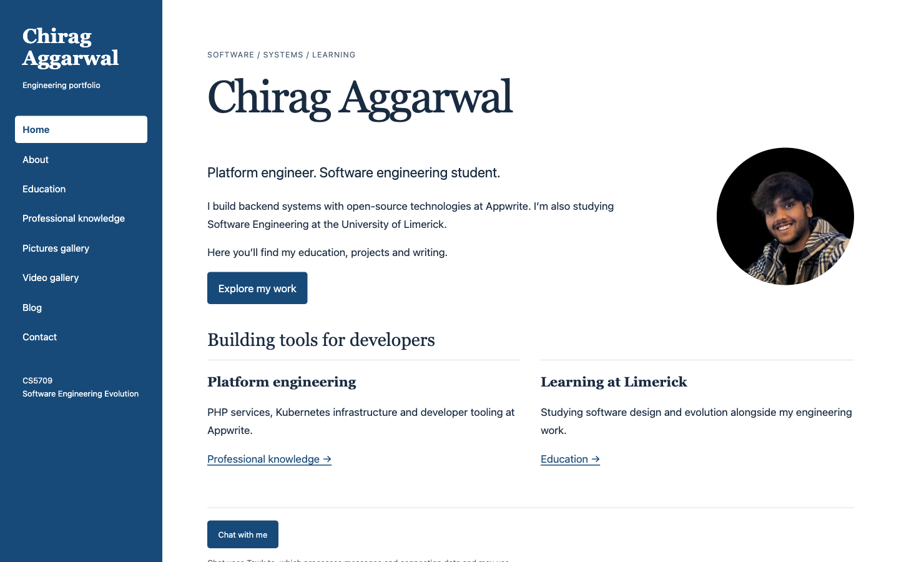
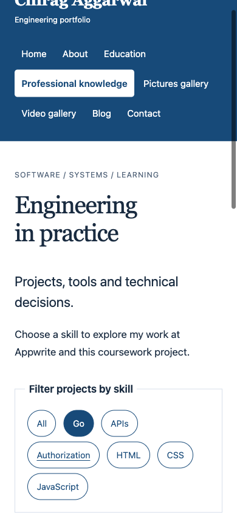

CS5709 Software Engineering Evolution · Assessment 1
2026-27/SEM1/CS5709 - Software Engineering Evolution/Assignment 1)This report and the website it describes are submitted for CS5709 Assessment 1. The website's code was written for this assessment. Some of its content was not.
The biography, work history, education details, three event photographs and both blog articles are my own pre-existing material from my personal portfolio at chiragaggarwal.tech (source repository chiragagg5k/profile-website, commit 70f641f). The two articles, “How we solved logging at Appwrite” (April 2026) and “How I built the Appwrite MCP server” (August 2026), are republished in full with links to the originals. They are presented as evidence of my professional writing, not as writing produced for this module. The MCP article's diagrams and screenshots are taken from the original publication.
I used an AI coding assistant (Claude Code) throughout this assessment. It helped me interpret the brief, write and refactor the website's code and tests, run automated and browser checks, deploy the site, build and record the animated MCP explainer video with Playwright, render the design diagrams and draft sections of this report. The decisions recorded in this report, the choice of content and the final text are mine, and I am responsible for them.
This project is a digital portfolio that presents my education, professional engineering work, event photographs, an animated video explainer and technical writing, and lets visitors message me directly. It is a separate site from my production portfolio, built to be small enough to explain completely. A Node.js build script combines one module per page with a shared layout and writes plain HTML documents, which Appwrite Sites serves. CSS provides a responsive layout, and two small browser scripts add progressive enhancements: a filter that links skills to project evidence, and a hosted Tawk.to chat widget that loads only after the visitor chooses to open it. All content stays readable without JavaScript. The work was carried out in three dated iterations recorded in Git, and is checked by 26 automated tests (structure, links, contrast, filtering, chat loading and a 404 regression) plus browser checks on the live site at desktop and mobile widths.
Audience and purpose. The site is read by the module assessor and by potential employers or collaborators. Both need evidence of what I have built and why, not a list of technologies. Requirements. The brief asks for Home, About, Education, Professional knowledge, Pictures and Video pages, a blog, instant messaging, shared navigation and CSS styling. Constraints. The deadline left about a week, the site had to be separate from my production portfolio, and the brief requires a full code listing, which rewards a small codebase.
Key decisions. I generate static HTML at build time rather than building a single-page app, so every page has a real URL and works without JavaScript or a client-side router. For messaging, I compared building a WebSocket chat backend with using a hosted service. A custom backend would need hosting, storage, an owner interface and moderation, so I chose Tawk.to, which provides the visitor widget and an owner inbox and mobile app. Because it is a third party that processes visitor data, it loads only after a click and a privacy notice.
Site scheme. Home → About · Education · Professional knowledge · Pictures gallery · Video gallery · Blog (two articles) · Contact. Every page shares the navigation bar and the chat button.
| Area | Phase 1 (this submission) | Phase 2 proposal |
|---|---|---|
| Profile | Home, About, Education with shared navigation | Downloadable tailored CV |
| Professional knowledge | Three structured project examples; skill filter | More case studies; free-text search |
| Media | Captioned photo gallery; captioned animated explainer of the MCP article | More explainers, narrated demos; enlarged photo view |
| Blog | Two full technical articles with figures | Tags, search, Markdown authoring |
| Messaging | Hosted instant messaging with privacy notice and email fallback | Notifications and conversation history for visitors |
| Quality | Responsive layout, keyboard use, automated tests | Automated deployment and user testing |
| Iteration | Date | Outcome |
|---|---|---|
| 1. Foundation | 30 Sep | Requirements checklist, sitemap, shared layout, all pages styled, isolated Appwrite deployment (7896a5b, 058165d) |
| 2. Features | 30 Sep | Project evidence and skill filter, Tawk.to chat with click-to-load, privacy notice and fallback, prefetching navigation, chat loading tests (13ad3a3 to 284e1be) |
| 3. Quality and content | 1 Oct | Per-page modules for a readable listing, 404 path fix, contrast tests, keyboard pass, full blog articles, descriptive alt text (cc707ca, 8c954ca) |
HTML, CSS and JavaScript modules; Node.js 22 (build script and built-in test runner); Prettier for formatting; Playwright for browser checks and screenshots; Git and GitHub for version control; Appwrite CLI and Appwrite Sites (Singapore region) for deployment; Tawk.to for messaging; Mermaid for diagrams. The site has no runtime or build dependencies beyond Node.js.
The design separates content (page modules and project data), presentation (one stylesheet and a shared layout) and optional behaviour (filter and chat scripts). The build runs once before deployment, so visitors receive finished HTML.

Each page is a module in pages/ exporting its file name, menu label, title and body. layout.mjs wraps every page in the same document, so navigation, the skip link and the footer exist once. build.mjs lists the pages in menu order and writes dist/.
Routing is file-based: every page has its own URL, such as about.html, so refresh, bookmarks and the Back button work without a client-side router. The navigation bar is generated once from the page list and marks the current page with aria-current; articles highlight Blog. Any unknown path gets the 404 page, whose links resolve from the site root.
Real HTML pages mean a full page load per navigation. navigation.mjs asks supporting browsers to prefetch linked pages to offset this, but I have not measured a speed-up. Content edits need a rebuild and deploy; there is no CMS. Chat depends on Tawk.to's availability.
A blue navigation rail and white reading column, Georgia headings and system body text, a 65-character line length and no decorative animation. The rail becomes a top bar below 720px. All text colours meet WCAG AA contrast (tested).


The full authored source follows, in build order. Generated output (dist/), images and the original portfolio's content are not repeated. The same files are in the GitHub repository at github.com/ChiragAgg5k/ul-university-notes (folder 2026-27/SEM1/CS5709 - Software Engineering Evolution/Assignment 1). Line numbers restart for each file.
| Check | Method | Result |
|---|---|---|
| Every page: one heading level 1, language, skip link, one active menu item, local links and images exist, alt text present | Automated (npm test) | Pass |
| Skill matching, no-script fallback, chat loading states (7 cases), prefetch candidates | Automated | Pass |
| 404 page at a nested missing path loads styles and links from the root | Automated regression test; live browser check | Pass (bug found and fixed in iteration 3) |
| Text colour contrast at least 4.5:1 | Automated, computed from the stylesheet | Pass |
| Keyboard order and visible focus; no horizontal scrolling at 390px on all pages | Playwright, local and live | Pass |
| Chat in both directions: visitor message reaches the owner dashboard, and the owner reply appears in the visitor widget | Manual, live site and Tawk.to dashboard, 1 October | Pass |


Portfolios usually list skills on their own. Here each skill is a button that filters project case studies, each with the problem, my contribution, a design choice and where to look for evidence, so a reader can go from “Go” or “APIs” to the work that shows it. The buttons expose their state with aria-pressed and a live region announces the result count. The filter is added only when its script loads; without it, all projects stay visible. It is a small, site-specific enhancement rather than a new technique.
Strengths. Every page is a real document, so links, refresh and the Back button behave normally and the site works without JavaScript. The per-page modules keep the code short enough to list in full. Tests cover the site's structure as well as its logic, and caught a real defect: the host serves the 404 page at any missing path, which broke its relative links until the page was given a root base URL. In the code, each module has one job (page content, layout, build, filter or chat), the filter's matching rule is a pure function with unit tests, and Prettier enforces one style.
Weaknesses. Messaging depends on a third party: during testing, Tawk.to returned server errors on some session starts, which the site can report but not fix, and if I do not answer within Tawk.to's wait time, an automatic message (reworded on 1 October from a generic support-team text) asks the visitor for an email address instead. The site also returns HTTP 200 for missing pages, which is host behaviour I could not change. In the code, page content is written as HTML strings inside JavaScript modules, which is harder to edit than Markdown and is not checked by an HTML validator; the stylesheet is one file with no component boundaries; and the chat loader is unit-tested only against a mocked provider. Two of three professional knowledge examples come from my job, and the third is this coursework, so the evidence is thin. The automated tests check structure, not real usability, and no one outside the project has used the site.
Improvements for Phase 2. Author articles in Markdown; add more case studies and search; add automated build, test and deploy on each push; run a short usability test with two or three people; and add notifications so visitors know when I reply.
Reflecting on this assignment, I was able to learn a lot more things as I was pretty much rebuilding what I already had, a portfolio website I have maintained over the years, to a new version from scratch. I was able to evolve the software in a manner where I can actually study the foundations of it and improve on them. For this iteration of the assignment I decided to go with static HTML over a complex framework like TanStack, which I used before, as it helped me get a more skeleton view of my work. I used Claude Code for help with it, but wanted my input to be genuine, so it helped me with much more of the manual work like testing. The tests did catch various bugs I hadn't thought of in my initial go. I also experimented with adding some new features which my older website did not have, for example a chat box. I did not want to invent it by hand, so I used Tawk.to, which initially was a bit hard to get around, but once set up it works quite well. I reused a lot of the components of the previous portfolio website like the articles page, which includes text from my original articles itself. Keeping the work small and focused did give me a much more relaxed view of the moving components, and let me work freely on how I wanted them to evolve. It's hard to assess your own work, but I think generative AI and having chats with it critiquing my own work did help me a lot with it.